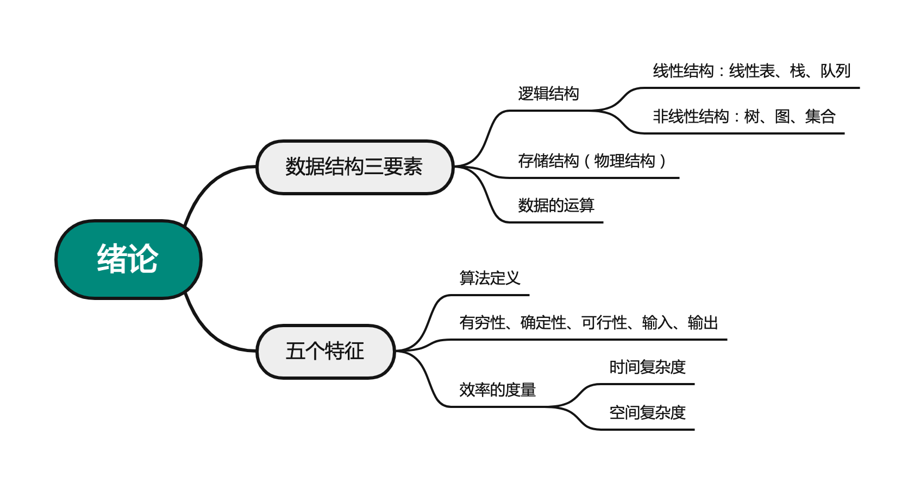

2022.12.10

答案【B】
m++执行次数为：int m=0,i,j;
for(i=1; i<=n; i++)
for(j=1; j<=2*i; j++)
m++;
n(n+1)
int sum = 0;
for(int i=1; i<n; i*=2)
for(int j=0; j<i; j++)
sum++;
O(n)。注意这里的第一个循环i*=2，所以j里边的sum++的运行次数是1，2，4，8，...，这样的。
假如 $m\in [17,32]$，那么 $次数=1+2+4+8+16=31$
执行时间时间与n^2成正比：√
问题规模与n^2成正比: X